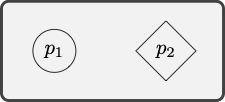

6 Formal Language
The language of quantificational logic will afford the means to capture the validity of a variety of arguments for which propositional logic appears to be inadequate. We specify:
a syntax for the language, which will include a vocabulary and a set of grammatical rules designed to specify which expressions are formulas of the language, and
a semantics for the language, which will explain how to interpret the expressions and formulas of the language and define what is for a formula to be true under a given interpretation.
Syntax
We begin with the vocabulary of quantificational logic.
Vocabulary
The vocabulary of quantificational logic contains six types of symbol:
- Constants
-
These are the lowercase letters \(a\), \(b\), \(c\), \(d\), and \(e\) with or without numerical subscripts:
\[ a, b, c, d, e \]
- Predicates
-
These are uppercase letters \(P\), \(Q\), \(R\), \(S\), and \(T\) with or without numerical subscripts.
\[ P, Q, R, S, T \dots \]
- Variables
-
These are lowercase letters \(x\), \(y\), and \(z\) with or without numerical subscripts:
\[ x, y, z \dots \]
- Connectives
-
These are the symbols: \[ \neg, \vee, \wedge, \to \]
- Quantifiers
-
There are two quantifier expressions: \[ \forall, \exists \] Parentheses
-
There are two parentheses: \[ ), ( \]
-
Nothing else is a symbol of the language.
Grammar
The grammar of quantificational logic explains how to combine these symbols into formulas of the language. We proceed in two stages.
- Atomic Formula
-
If \(P\) is a predicate with \(n\) argument places, and each of \(\tau_1, \dots, \tau_n\) is a constant or a variable, then \[ P\tau_1, \dots, \tau_n \] is an atomic formula.
Atomic formulas are the formal counterparts of simple predications such as ‘Los Angeles is a city’ or ‘Los Angeles is between San Diego and San Francisco’.
Example 6.1 Each of the expressions below is an atomic formula of quantificational logic: \[ \begin{array}{c} Pxy\\ Qabx\\ Rxaby_3\\ \dots \end{array} \]
Atomic formulas provide simple constituents for more complex formulas.
- Formula
-
We now define what is for an expression to be a formula of quantificational logic.
- All atomic formulas are formulas.
- If \(\varphi\) and \(\psi\) are formulas, then each of
\[
\neg \varphi, (\varphi \wedge \psi), (\varphi \vee \psi), (\varphi \to \psi)
\]
is a formula.
- If \(\varphi\) is a formula and \(x\) is a variable, then each of \(\forall x \varphi\) and \(\exists x \varphi\) is a formula.
- Nothing else is a formula.
We proceed to illustrate the characterization of formula through concrete examples.
 The construction tree depicts the construction of the formula from
simpler constituents.
The construction tree depicts the construction of the formula from
simpler constituents.
Example 6.2 The expression below is a formula of quantificational logic: \[ (\forall x Pxy \to \exists y \ Qab) \]
- By rule 2, \((\forall x Pxy \to \exists y \ Qab)\) is a formula if \(\forall x \ Pxy\) and \(\exists y \ Qab\) are each a formula.
- By rule 3, \(\forall x \ Pxy\) is a formula if \(Pxy\) is a formula.
- By rule 3, \(\exists y \ Qab\) is a formula if \(Qab\) is a formula.
- By rule 1, each \(Pxy\) and \(Qab\) are formulas, since they are each atomic formulas.
Therefore, we conclude that \((\forall x Pxy \to \exists y \ Qab)\) is a formula of quantificational logic.
 The construction tree depicts the construction of the formula from
simpler constituents.
The construction tree depicts the construction of the formula from
simpler constituents.
Example 6.3 The expression below is a formula of quantificational logic: \[ \forall x (Pxy \to Qab) \]
- By rule 3, \(\forall x (Pxy \to Qab)\) is a formula if \((Pxy \to Qab)\) is a formula.
- By rule 2, \((Pxy \to Qab)\) is a formula if each \(Pxy\) and \(Qab\) are formulas.
- By rule 1, each \(Pxy\) and \(Qab\) are formulas, since they are each atomic formulas.
Therefore, we conclude that \(\forall x (Pxy \to Qab)\) is a formula of quantificational logic.
We now make a distinction between two types of occurrences of a variable in a formula. In the formula \(\forall x (Qxy \to Ryx)\) the last two occurrences of the variable \(x\) match the variable accompanying the quantifier expression, whereas the occurrences of the variable \(y\) do not. The occurrences of the variable \(x\) have been captured by the initial quantifier, but the occurrences of the variable \(y\) remain free.
Free Occurrences
- Free Occurrence of a Variable
-
We define what is for an occurrence of a variable to be free in a formula:
- All occurrences of a variable in an atomic formula are free.
- The free occurrences of a variable in formulas of the form \(\varphi\) and \(\psi\) remain free when they occur in \[ \neg \varphi, (\varphi \wedge \psi), (\varphi \vee \psi), (\varphi \to \psi) \]
- No occurrence of the variable \(v\) is free in a formula of the form \[ \forall v \varphi, \exists v \varphi \] All occurrences of variables other than \(v\) that are free in \(\varphi\) remain free in those formulas.
Example 6.4 The first two occurrences of the variable \(x\) occur free in the formula: \[ Px \to (Qxy \to \forall x Rxx) \]
By rule 1, \(x\) occurs free in \(Px\), which is an atomic formula, and, by rule 3, the occurrence remains free when it occurs in a conditional of the form \(Px \to \psi\).
By rule 1, \(x\) occurs free in \(Qxy\), which is an atomic formula, and, by rule 2, the occurrence remains free when it occurs in a formula of the form \((Qxy \to \psi)\).
By rule 2, the last two occurrences of \(x\) in \(\forall x Rxx\) are not free.
An occurrence of a variable is free when it has not been captured by a quantifier. In the last example, the last two occurrences of the variable \(x\) are under the scope of the universal quantifier \(\forall x\), whereas the first two occurrences of the variable are not under the scope of a quantifier.
Bound Occurrences
- Bound Occurrence of a Variable:
-
An occurrence of a variable in a formula is bound if, and only if, it is not free in that formula.
A variable occurs freely in a formula if, and only if, some of its occurrences in the formula are free.
Open and Closed Formulas
- Open and Closed Formulas
-
A formula is open if, and only if, some variables occur freely in the formula. Otherwise, the formula is closed.
Example 6.5 The formula below is open: \[ (\forall x \exists y Rxy \vee Qyx) \] This is because the last occurrences of the variables \(y\) and \(x\) are free in the formula.
Example 6.6 The formula below is closed: \[ \forall x \exists y (Rxy \vee Qyx) \] The difference with respect to the last formula is that all occurrences of the variables \(y\) and \(x\) are now captured by the quantifiers \(\exists y\) and \(\forall x\), respectively.
- Notational Convention
-
We may remove the outer parentheses from a formula that is not part of another formula.
Notice that this convention will not allow us to omit the parentheses in a formula such as: \[ \forall x (Rxa \to Rax). \] For \((Rxa \to Rax)\) is here part of the formula \(\forall x (Rxa \to Rax)\). Such a formula is importantly different from: \[ (\forall x Rxa \to Rax). \] The former formula is a closed formula whereas the latter is an open formula, since the last occurrence of the variable \(x\) is free in \((\forall x Rxa \to Rax)\) as it is not in the scope of the universal quantifier \(\forall x\).
Example 6.7 We are able to use the expression \[ \forall x Rxa \to Rax \] is an abbreviation for the formula \[ (\forall x Rxa \to Rax) \]
Semantics
We now explain how to interpret the language of quantificational logic. We will not use assignments of truth values to interpret the language but rather models, which will assign a semantic value to the simplest constituents of a formula. A model for quantificational logic includes:
- a domain of discourse for the quantifiers to range over,
- a specification of denotations for the constants of the language, and
- a specification of extensions for the predicates of the language
The domain of discourse determines the truth conditions of quantified formulas in much the way in which the truth value of a natural language sentence such as ‘I packed everything into my suitcase’ depends on what is the domain of objects over which we take the quantifier ‘everything’ to range. In what follows, we will use a non-empty set of objects as the domain of a model. There are no restrictions on the domain of discourse other than it must contain at least one object.
We will let a model specify denotations for the constants of the language. Constants are formal counterparts of names in natural language, which are generally taken to denote an object in the domain of discourse, e.g., ‘Los Angeles’ denotes a city in Southern California, and ‘Silver Lake’ denotes an area of Los Angeles. A model will assign a member of the domain to each constant of the language as a denotation.
The case of predicates is more subtle. Predicates are formal counterparts of predicate expressions in natural language, which are true of some objects and not of others. Let us begin with one-place predicates such as ‘is red’, which applies to red objects and does not apply to non-red objects. One suggestion at this point is to identify the interpretation of ‘red’ with the set of objects to which the predicate applies. The set of objects to which a given predicate applies is known as the extension of the predicate. Thus the extension of the predicate ‘red’ is the set of red objects and the extension of the predicate ‘human being’ is the set of human beings.
The case of two-place predicates is more complicated. The predicate ‘is south of’ applies to Los Angeles and San Francisco in that order but it fails to apply to San Francisco and Los Angeles in that order. This raises the question of how to specify the extension of the predicate. The answer is to use sets of ordered pairs of objects in the domain, e.g., \(\langle LA, SF \rangle\) is the ordered pair of Los Angeles and San Francisco in that order whereas \(\langle SF, LA \rangle\) is the ordered pair of San Francisco and Los Angeles in that order. The extension of the two-place predicate ‘is south of’ will be a set of ordered pairs, which contains \(\langle LA, SF \rangle\) but not \(\langle SF, LA \rangle\). The solution generalizes to predicates with even more argument places. The interpretation of a three-place predicate is a set of ordered triples, and more generally, the interpretation of an \(n\)-place predicate is a set of ordered \(n\)-tuples.
Model
- Model
-
A model \(M\) for quantificational logic is an ordered pair \(\langle D, I\rangle\), where:
- \(D\) is a non-empty set of objects, and
- \(I\) interprets constants and predicates in accordance to the requirements:
- If \(a\) is a constant, \(I(a)\) is a member of \(D\).
- If \(P\) is a one-place predicate, \(I(P)\) is a set of members of \(P\).
- If \(R\) is an \(n\)-place predicate, \(I(R)\) is a set of \(n\)-tuples of members of \(D\).
Given an argument in the language of quantificational logic, we will often consider the question of whether there is an interpretation of the language on which the premises are true and the conclusion false. That amounts to the question whether there is a model for quantificational logic, which verifies the premises but not the conclusion of the argument.
Example 6.8 Consider the argument given below.
- \((Pa \wedge Qb) \to Rab\)
- \(\neg Rba\)
- \(\exists x (Px \wedge Rxa)\)
We may evaluate the premises and conclusion of the argument in a model \(M\) given by \(\langle D, I\rangle\), where:
- \(D = \{1, 2\}\)
- \(I(a) = 1\)
- \(I(b) = 2\)
- \(I(P) = \{1, 2\}\)
- \(I(Q) = \{2\}\)
- \(I(R) = \{\langle 1, 2\rangle\}\)
We will eventually explain that the model verifies the premises but not the conclusion of the argument.
One heuristic you may find helpful for the specification of a model is to use a diagrams as partial representation of the model. The diagram should come accompanied with a key designed to help us specify the interpretation of the relevant constants and predicates.

\(P : \text{enclosed by a
circle}\)
\(Q : \text{enclosed by a dark grey
figure}\)
\(R : \text{points to}\)
\(a : p_1\)
\(b : p_2\)
Example 6.9 The diagram included in the margin encodes the partial specification of a model \(\langle D, I\rangle\), where:
- \(D = \{p_1, p_2\}\)
- \(I(a) = p_1\)
- \(I(b) = p_2\)
- \(I(P) = \text{enclosed by a circle}\)
- \(I(Q) = \text{enclosed by a dark grey figure}\)
- \(I(R) = \text{points to}\)
Notice that the diagram comes with a key designed to explain how to interpret each predicate and constant in the diagram.
This heuristic comes with severe limitations, since some models, e.g., models with an infinite domain, are much too complex to be represented by means of a finite diagram. The method will, however, suffice for some purposes; it will enable us to establish the invalidity of a broad family of arguments in quantificational logic.
The definition of a model makes sure that models provide a semantic value for constants and predicates, but they remain silent when it comes to variables. If constants are the formal counterparts of names in natural language, variables resemble pronouns like ‘he’ or ‘she’, which do not appear to receive a denotation when used in a sentence like ‘If a person likes opera, then she likes classical music.’ For this reason, models do not assign a denotation to variables.
Instead, variables will be treated as temporary labels for members of the domain. That will allow us to evaluate an open formula \(Px \wedge Rxy\) relative to an assignment of values to the variables that occur in it. More generally, given a model \(M\), we now explain what is an assignment of members of \(M\) to the variables of the language.
- Variable Assignment
-
A variable assignment \(\alpha\) over a model \(M\) is a map from the range of variables to a members of the domain \(D\).
Example 6.10 Each of the maps depicted below are variable assignments over a model \(M\) with domain \(\{p_1, p_2\}\): \[ \begin{array}{cccccccccc} x & y & z & x_1 & y_1 & z_1 & x_2 & y_2 & z_2 & \dots \\ \hline p_1 & p_2 & p_1 & p_2 & p_1 & p_2 & p_1 & p_1 & p_2 & \dots \\ \end{array} \]
\[ \begin{array}{cccccccccc} x & y & z & x_1 & y_1 & z_1 & x_2 & y_2 & z_2 & \dots \\ \hline p_2 & p_1 & p_2 & p_1 & p_2 & p_1 & p_2 & p_1 & p_2 & \dots \\ \end{array} \] \[ \begin{array}{cccccccccc} x & y & z & x_1 & y_1 & z_1 & x_2 & y_2 & z_2 & \dots \\ \hline p_1 & p_2 & p_2 & p_2 & p_2 & p_1 & p_2 & p_1 & p_2 & \dots \\ \end{array} \]
Once variable assignments are in place, we are in a position to assign a semantic value to a variable \(x\) in a model \(M\) relative to an assignment \(\alpha\), which is just \(\alpha(x)\).
For technical reasons, we want to assign semantic values to open formulas in a model relative to a variable assignment over the model. The definition of truth in a model relative to a variable assignment will be inductive: we will define the truth conditions of complex formulas in terms of the truth conditions of simpler ones in much the way with did with the definition of truth under an assignment of truth values to propositional variables in the case of propositional logic. We will begin with an account of the truth conditions of atomic formulas, and we will explain how to assign truth values to more complex sentences in a model relative to an assignment.
- Denotation
-
If \(\tau\) is either a constant \(c\) or a variable \(x\), the denotation of \(\tau\) in a model \(M\) under assignment \(\alpha\) is \(I(c)\) if \(\tau\) is a constant \(c\) and \(\alpha(x)\) if \(\tau\) is a variable \(x\).
- Atomic Formulas
-
\(P\tau\) is true in \(M\) under \(\alpha\) if the denotation of \(\tau\) in \(M\) under \(\alpha\) is in the extension of \(P\), e.g., \(Px\) is true in \(M\) under \(\alpha\) if \(\alpha(x) \in I(P)\) and \(Pc\) is true in \(M\) under \(\alpha\) if \(I(c) \in I(P)\). More generally, \(R\tau_1 \cdots \tau_n\) is true in \(M\) under \(\alpha\) if the denotations of \(\tau_1 \cdots \tau_n\) are in that order in the extension of \(R\), e.g., \(Rax\) is true in \(M\) under \(\alpha\) if \(\langle I(a), \alpha(x)\rangle \in I(R)\) .
Example 6.11 \(D = \{1, 2\}\)
\(I(P) = \{1, 2\}\)
\(I(Q) = \{2\}\)
\(I(R) = \{\langle 1,
2\rangle\}\)
\(I(a) = 1\)
\(I(b) = 2\)
Let \(\alpha\) be an assignment for the model \(M\): \[ \begin{array}{cccccccccc} x & y & z & x_1 & y_1 & z_1 & \dots \\ \hline 1 & 2 & 2 & 2 & 2 & 1 & \dots \\ \end{array} \] Then:
- \(Rxy\) is true in \(M\) relative to \(\alpha\) because \(\langle \alpha(x), \alpha(y)\rangle = \langle 1, 2\rangle \in I(R)\).
- \(Ray\) is true in \(M\) relative to \(\alpha\) because \(\langle I(a), \alpha(y)\rangle = \langle 1, 2\rangle\in I(R)\).
- \(Px_1\) is true in \(M\) relative to \(\alpha\) because \(\alpha(x_1) \in I(P)\), that is, \(2 \in I(P)\).
The evaluation of atomic formulas is similar when we use a diagram to specify a model.
\(P : \text{enclosed by a
circle}\)
\(Q : \text{enclosed by a dark grey
figure}\)
\(R : \text{points to}\)
\(a : p_1\)
\(b : p_2\)
Example 6.12 Consider a model \(M\) depicted by the diagram, and let \(\alpha\) be an assignment of the form: \[ \begin{array}{ccccccc} x & y & z & x_1 & y_1 & z_1 & \dots \\ \hline p_1 & p_2 & p_2 & p_2 & p_2 & p_1 & \dots \\ \end{array} \] Then:
- \(Rxy\) is true in \(M\) relative to \(\alpha\) because \(\alpha(x)\) points to \(\alpha(y)\). That is, \(p_1\) points to \(p_2\).
- \(Ray\) is true in \(M\) relative to \(\alpha\) because \(p_1\) points to \(\alpha(y)\). That is, \(p_1\) points to \(p_2\).
- \(Px_1\) is true in \(M\) relative to \(\alpha\) because \(\alpha(x_1)\), that is, \(p_2\), is enclosed by a circle.
If a complex formula is constructed from simpler formulas by an application of a connective such as \(\neg\), \(\wedge\). \(\vee\), \(\to\), and \(\leftrightarrow\), then its truth conditions in a model \(M\) relative to an assignment \(\alpha\) are given inductively in the style of the definition of truth for propositional logic. That is,
- Negation
-
\(\neg \varphi\) is true in \(M\) relative to a variable asignment \(\alpha\) if, and only if, \(\varphi\) is not true in \(M\) relative to \(\alpha\).
- Conjunction
-
\(\varphi \wedge \psi\) is true in \(M\) relative to a variable asignment \(\alpha\) if, and only if, \(\varphi\) is true in \(M\) relative to \(\alpha\) and \(\psi\) is true in \(M\) relative to \(\alpha\).
- Disjunction
-
\(\varphi \vee \psi\) is true in \(M\) relative to a variable asignment \(\alpha\) if, and only if, \(\varphi\) is true in \(M\) relative to \(\alpha\) or \(\psi\) is true in \(M\) relative to \(\alpha\).
- Conditional
-
\(\varphi \to \psi\) is true in \(M\) relative to a variable asignment \(\alpha\) if, and only if, \(\varphi\) is not true in \(M\) relative to \(\alpha\) or \(\psi\) is true in \(M\) relative to \(\alpha\).
Example 6.13 \(D = \{1, 2\}\)
\(I(P) = \{1, 2\}\)
\(I(Q) = \{2\}\)
\(I(R) = \{\langle 1,
2\rangle\}\)
\(I(a) = 1\)
\(I(b) = 2\)
Let \(\alpha\) be an assignment for the model \(M\): \[ \begin{array}{cccccccccc} x & y & z & x_1 & y_1 & z_1 & \dots \\ \hline 1 & 2 & 2 & 2 & 2 & 1 & \dots \\ \end{array} \] Then:
- \(Pa \wedge Qb\) is true in \(M\) relative to \(\alpha\) because \(Pa\) is true in \(M\) relative to \(\alpha\) and \(Qb\) is true in \(M\) relative to \(\alpha\). The former is true because \(p_1 \in I(P)\) and the latter is true because \(p_2 \in I(Q)\).
- \((Pa \wedge Qb) \to Rab\) is true in \(M\) relative to \(\alpha\) because \(Rab\) is true in \(M\) relative to \(\alpha\). This is because \(\langle I(a), I(b)\rangle = \langle p_1, p_2 \rangle \in I(R)\).
- \(\neg Rba\) is in \(M\) relative to \(\alpha\) because \(Rba\) is not true in \(M\) relative to \(\alpha\). This is because \(\langle I(b), I(a)\rangle = \langle p_2, p_1 \rangle \notin I(R)\).
The situation is similar for diagramatic representations of a model:
\(P : \text{enclosed by a
circle}\)
\(Q : \text{enclosed by a dark grey
figure}\)
\(R : \text{points to}\)
\(a : p_1\)
\(b : p_2\)
Example 6.14 Consider a model \(M\) depicted by the diagram, and let \(\alpha\) be an assignment of the form: \[ \begin{array}{ccccccc} x & y & z & x_1 & y_1 & z_1 & \dots \\ \hline p_1 & p_2 & p_2 & p_2 & p_2 & p_1 & \dots \\ \end{array} \] Then:
- \(Pa \wedge Qb\) is true in \(M\) relative to \(\alpha\) because \(Pa\) is true in \(M\) relative to \(\alpha\) and \(Qb\) is true in \(M\) relative to \(\alpha\). The former is true because \(p_1\) is enclosed by a circle and the latter is true because \(p_2\) is enclosed by a grey figure.
- \((Pa \wedge Qb) \to Rab\) is true in \(M\) relative to \(\alpha\) because \(Rab\) is true in \(M\) relative to \(\alpha\). This is because \(I(a)\) points to \(I(b)\). That is, \(p_1\) points to \(p2\).
- \(\neg Rba\) is in \(M\) relative to \(\alpha\) because \(Rba\) is not true in \(M\) relative to \(\alpha\). This is because \(I(b)\) does not point to \(I(b)\). That is, \(p_2\) does not point to \(p1\).
We now explain how to evaluate quantified formulas of the form \(\forall v \varphi\) and \(\exists v \varphi\) in a model \(M\) relative to a variable assignment over \(M\). We want a formula of the form \(\exists x P(x)\) to be true in \(M\) relative to \(\alpha\) if some member of the domain of \(M\) lies in the extension of \(P\). One way to achieve this is to declare the formula true in \(M\) relative to \(\alpha\) if there is an object in the domain of \(M\) that we can assign to \(x\) in order to verify \(P(x)\), which means that there is an assignment \(\beta\) which is just like \(\alpha\) except perhaps for the fact that it assigns a different object to \(x\) such that \(P(x)\) is true in \(M\) relative to \(\beta\). Similarly, we want a formula \(\forall x P(x)\) to be true in \(M\) relative to \(\alpha\) if every member of the domain of \(M\) lies in the extension of \(P\). In other words, \(P(x)\) is true in \(M\) no matter what we assign to \(x\) provided the new variable assignment remains just like \(\alpha\) in all other respects.
- Existential Quantification
-
\(\exists v \varphi\) is true in \(M\) relative to a variable asignment \(\alpha\) if, and only if, there is an object \(p\) in the domain of \(M\) such that \(\varphi\) is true in \(M\) relative to \(\alpha[x/p]\), which is an assignment just like \(\alpha\) except perhaps for the fact that it assigns \(p\) to the variable \(x\).
- Universal Quantification
-
\(\forall v \varphi\) is true in \(M\) relative to a variable asignment \(\alpha\) if, and only if, for every object \(p\) in the domain of \(M\), \(\varphi\) is true in \(M\) relative to \(\alpha[x/p]\), which is an assignment just like \(\alpha\) except perhaps for the fact that it assigns \(p\) to the variable \(x\).
Example 6.15 \(D = \{1, 2\}\)
\(I(P) = \{1, 2\}\)
\(I(Q) = \{2\}\)
\(I(R) = \{\langle 1,
2\rangle\}\)
\(I(a) = 1\)
\(I(b) = 2\)
Let \(\alpha\) be an assignment for the model \(M\): \[ \begin{array}{cccccccccc} x & y & z & x_1 & y_1 & z_1 & \dots \\ \hline 1 & 2 & 2 & 2 & 2 & 1 & \dots \\ \end{array} \] Then:
- \(\exists x (Px \wedge \neg Rxa)\) is not true in \(M\) relative to \(\alpha\) because there is no member of \(D\) we can assign to the variable \(x\), where the new variable assignment remains just like \(\alpha\) in all other respects, in order to make \(Px \wedge \neg Rxa\) true:
- \(\alpha[x/1]\): \(Px \wedge \neg Rxa\) is not true relative to that assignment because \(\langle 1, I(a)\rangle \notin I(R)\).
- \(\alpha[x/2]\): \(Px \wedge \neg Rxa\) is not true relative to that assignment because \(\langle 2, I(a)\rangle \notin I(R)\).
- \(\forall x Px\) is true in \(M\) relative to \(\alpha\) because no matter what member of \(D\) assign to the variable \(x\), where the new variable assignment remains just like \(\alpha\) in all other respects, we find that \(Px\) is true in \(M\) relative to the new assignment:
- \(\alpha[x/1]\): \(Px\) is true relative to that assignment because \(1 \in I(P)\).
- \(\alpha[x/2]\): \(Px\) is true relative to that assignment because \(2 \in I(P)\).
The situation is similar for diagramatic representations of a model \(M\) relative to \(\alpha\) because there is no member of \(D\) we can assign to the variable \(x\) making sure the new variable assignment remains just like \(\alpha\) in all other respects in order to make:
\(P : \text{enclosed by a
circle}\)
\(Q : \text{enclosed by a dark grey
figure}\)
\(R : \text{points to}\)
\(a : p_1\)
\(b : p_2\)
Example 6.16 Consider a model \(M\) depicted by the diagram, and let \(\alpha\) be an assignment of the form: \[ \begin{array}{ccccccc} x & y & z & x_1 & y_1 & z_1 & \dots \\ \hline p_1 & p_2 & p_2 & p_2 & p_2 & p_1 & \dots \\ \end{array} \] Then:
- \(\exists x (Px \wedge \neg Rxa)\) is not true in \(M\) relative to \(\alpha\) because there is no member of \(D\) we can assign to the variable \(x\) making sure the new variable assignment remains just like \(\alpha\) in all other respects in order to make: \(Px \wedge \neg Rxa\):
- \(\alpha[x/p_1]\): \(Px \wedge \neg Rxa\) is not true relative to that assignment because \(p_1\) does not point to \(p_1\).
- \(\alpha[x/p_2]\): \(Px \wedge \neg Rxa\) is not true relative to that assignment because \(p_2\) does not point to \(p_1\).
- \(\forall x Px\) is true in \(M\) relative to \(\alpha\) because no matter what member of \(D\) assign to the variable \(x\), where the new variable assignment remains just like \(\alpha\) in all other respects, we find that \(Px\) is true in \(M\) relative to the new assignment:
- \(\alpha[x/p_1]\): \(Px\) is true relative to that assignment because \(p_1\) is enclosed by a circle.
- \(\alpha[x/p_2]\): \(Px\) is true relative to that assignment because \(p_2\) is enclosed by a circle.
Once we define what is for a formula \(\varphi\) to be true in a model \(M\) relative to an assignment \(\alpha\), we are in a position to define what is for a formula \(\varphi\) to be true in a model \(M\).
- Truth in a Model
-
A formula \(\varphi\) is true in a model \(M\) if, and only if, \(\varphi\) is true in \(M\) relative to all variable assignments over \(M\).
- Logical Truth
-
A formula \(\varphi\) of quantificational logic is a logical truth if, and only if, \(\varphi\) is true in every model.
One difference between propositional logic and quantificational logic is that we are not in a position to survey all interpretations of the language in order to determine whether a formula is a logical truth. There is an infinity of domains of discourse to consider and there are different interpretations available for the constants and predicates of the language available for each such domain. The generalization of the tableaux method will provide us with an indirect method for establishing the logical truth of a formula, but in the meantime, all we are in a position to do is to find a counterexample model when a formula is not a logical truth.

\(R : \text{points to}\)
\(a : p_1\)
Example 6.17 The formula \(Raa \to \forall x Rxa\) is not a logical truth.
The model depicted by the diagram verifies the antecedent of the conditional \(Raa\) but it falsifies the consequent \(\forall x Rax\).
The atomic formula \(Raa\) is true in the model because \(p_1\) points to itself.
\(\forall x Rax\) is not true in the model because \(Rax\) does not remain true no matter what value we assign to \(x\), e.g., \(Rax\) is not true relative to an assignment on which \(x\) denotes \(p_2\).
- Equivalence
-
Two formulas \(\varphi\) and \(\psi\) of quantificational logic are equivalent if, and only if, they are true in exactly the same models.
We find ourselves in a similar situation. We are not yet in a position to establish that two formulas are logically equivalent, but if they are not, we may set out to find a counterexample in the form of a model in which one formula is true and the other one is false.

\(P: \text{enclosed by a
circle}\)
\(Q: \text{enclosed by a diamond}\)
Example 6.18 The formulas \(\exists x Px \wedge \exists x Qx\) and \(\exists x (Px \wedge Qx)\) are not a logically equivalent.
The model \(M\) depicted by the diagram verifies \(\exists x Px \wedge \exists x Qx\) but it falsifies \(\exists x (Px \wedge Qx)\).
The conjunction \(\exists x Px \wedge \exists x Qx\) is true in the model because each conjunct is true in the model. \(\exists x Px\) is true in the model because \(Px\) is true when \(p_1\) is assigned to \(x\), and \(\exists x Qx\) is true in the model because \(Qx\) is true when \(p_2\) is assigned to \(x\).
The existential quantification \(\exists x (Px \wedge Qx)\) is not true in the model because the conjunction \(Px \wedge Qx\) is never true no matter what we may assign to the variable \(x\).
- Consistency
-
A set of formulas \(S\) of quantificational logic is consistent if, and only if, there is at least one model in which all of its members are true. Otherwise, the set is inconsistent.
If a set of formulas is consistent, then we are in a position to search for a model in which all of their members are true, but it is a different matter to conclusively establish that a set of sentences is inconsistent.

\(P: \text{enclosed by a
circle}\)
\(Q: \text{enclosed by a dark grey
figure}\)
\(R: \text{points to}\)
\(a : p_1\)
\(b : p_2\)
Example 6.19 The set of formulas \(\{R(a,b), P(a), Q(b), \exists x (P(x) \wedge Q(x)\}\) is consistent.
All these formulas are true in the model depicted by the diagram:
\(Rab\) is true in the model because the denotation of \(a\) points to that of \(b\). That is, \(p_1\) points to \(p_2\).
\(Pa\) is true because the denotation of \(a\), namely, \(p_1\), is enclosed by a circle.
\(Qb\) is true because the denotation of \(b\), namely, \(p_2\), is enclosed by a dark grey figure.
\(\exists x (Px \wedge Qx)\) is true in the model because the conjunction \(Px \wedge Qx\) is true when we assign a member of the domain, namely, \(p_2\), to the variable \(x\).
- Validity
-
An argument of quantificational logic is valid if, and only if, there is no model which all of its premises are true while its conclusion is false. Otherwise, the argument is invalid.
If an argument is not valid, then we are in a position to search for a model in which the premises are true and the conclusion is false. Otherwise, we will have to rely on a generalization of the tableaux method in order to establish validity.
\(P : \text{enclosed by a
circle}\)
\(Q : \text{enclosed by a dark grey
figure}\)
\(R : \text{points to}\)
\(a : p_1\)
\(b : p_2\)
Example 6.20 Consider the following argument:
- \((P(a) \wedge Q(b)) \to R(a,b)\)
- \(\neg R(b,a)\)
- \(\exists x (P(x) \wedge R(x,a))\)
The model depicted by the diagram verifies the premises of the argument but falsifies the conclusion.
The conditional \((Pa \wedge Qb) \to Rab\) is true in the model because its consequent \(Rab\) is true in the model.
The negation \(\neg Rba\) is true in the model because the denotation of \(b\), namely, \(p_2\) does not point to the denotation of \(a\), namely, \(p_1\).
The existential quantification \(\exists x (Px \wedge Rxa)\) is false in the model because the conjunction \(Px \wedge Rxa)\) is never true no matter what we assign to the variable \(x\).
Exercises
Determine whether each of the following expressions is an atomic formula of quantificational logic.
\(\neg Rxy\)
\(Rxy\)
\(Aabx\)
\(Qe\)
\(Pxyza\)
\(RPa\)
Determine whether each of the following expressions is a formula of quantificational logic.
\(\neg \neg Rxy\)
\((Pa \to (Axy \wedge \exists x Qx)\)
\(\forall x Ryy\)
\(\exists x y (P \wedge P(y))\)
\(\forall \forall x Ryx\)
\(\exists x \exists y Rxy\)
Determine whether each of the following expressions is an abbreviation for a formula of quantificational logic.
\(\exists x \exists y Rxy \to Px\)
\(\forall x Rx \vee \exists y Qyy\)
\(Px \wedge Qx \vee Rxy\)
\(Px \wedge Qx \to Rxy\)
\(\exists x Px \wedge \exists y Qy \wedge \exists z Rz\)
\(\exists x \forall y \exists z (Px \wedge Qy \wedge Rxyz)\)
Determine whether the following formulas contain a free occurrence of the variable \(x\).
\(\forall x (Rxy \wedge Ryx)\)
\(\forall x Rxy \wedge Ryx\)
\(\exists x (Px \wedge Qx) \to \forall y Rxy\)
\(\forall x \exists y Rxy \to \exists x \forall y Ryx\)
\(\forall x \exists y Rxy \to \forall y Ryx\)
\(\forall x (\exists y Rxy \to \forall y Ryx)\)
Determine whether the following formulas are open or closed. Justify your answers.
\(\forall x Rxy \wedge Ryxz\)
\(Rab\)
\(\exists x (Pax \wedge Qxa) \to \forall y Rxy\)
\(\forall x Ryy\)
\(\forall x \exists y \forall z Rxyx\)
\(Rax \to \forall x Rxx\)
Determine which of the following formulas are true in the model:

\(Q : \text{enclosed by a dark grey figure}\)
\(S : \text{enclosed by a circle}\)
\(T : \text{enclosed by a diamond}\)
\(R : \text{points to}\)
\(a : p_1\)
\(b : p_2\)\(Rab\)
\(Rab \to Rbb\)
\(Pa \wedge Qb\)
\(\exists x Sx \wedge \exists x Tx\)
\(\forall x (\exists y Rxy \vee \exists y Ryx)\)
\(\forall x (Sx \to \exists y (Qy \wedge Rxy))\)